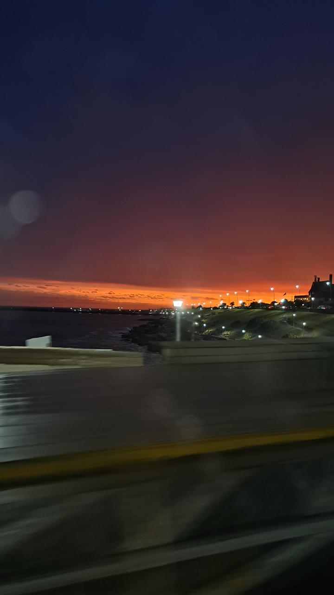

Atardecer en Mar del Plata

Esta foto fue sacada sobre la bahia "punta chica", en Mar del Plata
- Puesta del sol: 19:47
- Configuracion de la camara: ISO 200, 24 mm, -1.1 ev, f 1.8, 1/25 s

Esta foto fue sacada sobre la bahia "punta chica", en Mar del Plata